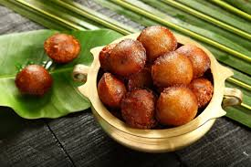

🍩 Unniyappam Recipe

Ingredients
- 1 cup rice flour
- 1/2 cup jaggery (grated)
- 1 ripe banana (mashed)
- 2 tbsp coconut bits
- 1/4 tsp cardamom powder
- 1/4 tsp baking soda (optional)
- 1 tbsp ghee
- Oil for deep frying
Instructions
- Melt jaggery in a little water and strain to remove impurities.
- Mix rice flour, mashed banana, jaggery syrup, cardamom, coconut bits, and baking soda into a thick batter.
- Let the batter rest for at least 1 hour.
- Heat oil in an appam pan (appe pan), pour batter into each cavity.
- Fry until golden brown and crisp on both sides.
- Remove and drain excess oil using paper towels.
Serve With
- As a tea-time snack
- During Onam or other Kerala festivals
- With coconut chutney (optional)
🍌 Tip: Use well-ripened bananas for best flavor and sweetness.